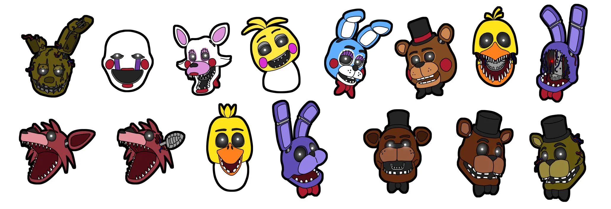
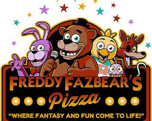

historia do five nights ats freddy

(lalalalala) Existe um cartaz de "Regras Para a Segurança" no Canto do Corredor Leste que é substituído aleatoriamente por artigos de jornais durante a jogatina. Estes artigos revelam certos elementos da história oculta do jogo.
A Pizzaria Freddy Fazbear foi um restaurante popular para crianças e igualmente para adultos. No entanto, inúmeros incidentes - incluindo o sequestro de cinco crianças por um homem vestindo um traje de animatrônico vazio, queixas ao Departamento de Saúde sobre inúmeros relatos de sujeira e "A Mordida de 87" - fizeram a pizzaria cair em tempos difíceis. A Pizzaria Freddy Fazbear foi sancionada a fechar até final do ano, já que potenciais compradores não queriam seus nomes associados ao restaurante.Os quatro mascotes - Freddy Fazbear, Bonnie, o Coelho, Chica, a Galinha e Foxy, a Raposa Pirata - fediam e excretavam algo que parecia ser "sangue e muco" em torno de suas bocas e olhos, sendo chamados de "cadáveres reanimados" por pais que frequentavam o local.
O Cara do Telefone diz, na primeira noite, que os animatrônicos não foram lavados em mais de 20 anos de serviço, o que explicaria o odor desagradável. O mau cheiro também pode ser atribuído a uma teoria popular de que as crianças desaparecidas foram colocadas dentro dos trajes dos animatrônicos, e que seus corpos em decomposição provocavam um cheiro repulsivo.
